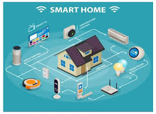

5G Technology
Explore the impact of 5G technology on communication and connectivity.
5G technology is revolutionizing the digital landscape by delivering unprecedented speed, ultra-low latency, and massive connectivity. As the fifth generation of mobile networks, 5G offers data transfer rates up to 100 times faster than 4G, enabling seamless streaming, quicker downloads, and real-time communication. It supports a broader spectrum of devices, from smartphones to IoT-enabled gadgets, making it a cornerstone for smart cities, autonomous vehicles, and industrial automation. The ultra-low latency of 5G is critical for applications like remote surgery, augmented reality (AR), and virtual reality (VR), where split-second responses are essential.
Additionally, its enhanced capacity allows for the connection of billions of devices simultaneously, fostering innovation in sectors like healthcare, education, and entertainment. Businesses benefit from 5G's ability to support edge computing, enabling faster processing and data analysis at the source. As 5G networks continue to expand globally, they are expected to unlock new opportunities and redefine how we interact with technology in our daily lives.
5G Technology is the newest and fastest generation of mobile networks, bringing a huge leap forward in how we use the internet on our phones, computers, and other smart devices. It’s much faster and more reliable than the previous 4G network. Let’s explore what makes 5G special and how it is changing our world.
1. What is 5G?
5G stands for the fifth generation of wireless technology. It allows devices to connect to the internet with lightning-fast speeds, low delay (latency), and the ability to handle more devices at once.
2. How Fast is 5G?
With 5G, you can download a full movie in just a few seconds, which would take minutes with 4G. It offers speeds up to 10 times faster than 4G, making streaming, gaming, and video calls smoother and without interruptions.
3. Benefits of 5G
- Faster Internet: Activities like online gaming, video conferencing, and streaming 4K videos are quicker and smoother.
- Lower Latency: This means almost no delay between sending and receiving data, which is great for online games and virtual reality.
- More Connections: 5G can handle thousands of connected devices in one area without slowing down, making it ideal for smart cities and large events.
4. Where is 5G Used?
- Smartphones: 5G phones let users enjoy ultra-fast browsing and downloads.
- Self-Driving Cars: Cars can communicate with each other instantly to improve road safety.
- Healthcare: Remote surgeries and real-time monitoring of patients become possible with 5G.
- Smart Cities: Traffic lights, security cameras, and other devices can work together to make cities more efficient and safer.
5. Challenges of 5G
- Limited Coverage: 5G networks are still being built, so it’s not available everywhere yet.
- Expensive Phones and Plans: Many 5G-enabled devices and data plans cost more than 4G ones.
- Battery Drain: 5G uses more power, so devices may need better batteries.
The Future with 5G
5G technology will continue to grow, making the internet faster and smarter for everyone. It will power innovations like smart homes, robotic surgeries, and virtual reality classrooms, creating new possibilities for how we live, work, and play.
In short, 5G is transforming the way we connect to the internet, bringing us closer to a future where technology is faster, smarter, and more connected than ever before.